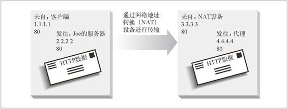

20.4 通用的重定向方法
本节我们会深入介绍服务器和代理常用的各种重定向方法。可以通过这些技术将流量重定向到不同的（可能更优的）服务器，或者通过代理来转发流量。具体来说，我们会介绍 HTTP 重定向、DNS 重定向、任播寻址、IP MAC 转发以及 IP 地址转发。
20.4.1 HTTP重定向
Web 服务器可以将短的重定向报文发回给客户端，告诉他们去其他地方试试。有些 Web 站点会将 HTTP 重定向作为一种简单的负载均衡形式来使用。处理重定向的服务器（重定向服务器）找到可用的负载最小的内容服务器，并将浏览器重定向到那台服务器上去。对广泛分布的 Web 站点来说，确定“最佳”的可用服务器会更复杂一些，不仅要考虑到服务器的负载，还要考虑到浏览器和服务器之间的因特网距离。与其他一些形式的重定向相比，HTTP 重定向的优点之一就是重定向服务器知道客户端的 IP 地址；理论上来讲，它可以做出更合理的选择。
图 20-1 HTTP 重定向
下面是 HTTP 重定向的工作过程。在图 20-1a 中，Alice 向 www.joes-hardware.com 发送了一条请求：
GET /hammers.html HTTP/1.0
Host: www.joes-hardware.com
User-Agent: Mozilla/4.51 [en] (X11; U; IRIX 6.2 IP22)
在图 20-1b 中，服务器没有回送带有 HTTP 状态码 200 的 Web 页面主体，而是回送了一个带有状态码 302 的重定向报文：
HTTP/1.0 302 Redirect
Server: Stronghold/2.4.2 Apache/1.3.6
Location: http://161.58.228.45/hammers.html
现在，在图 20-1c 中，浏览器会用重定向 URL 重新发送请求，这次会发送给主机 161.58.228.45：
GET /hammers.html HTTP/1.0
Host: 161.58.228.45
User-Agent: Mozilla/4.51 [en] (X11; U; IRIX 6.2 IP22)
另一个客户端可能会被重定向到另一台服务器上去。在图 20-1d-f 中，Bob 的请求会被重定向到 161.58.228.46。
HTTP 重定向可以在服务器间导引请求，但它有以下几个缺点。
由于存在这些弱点，HTTP 重定向通常都会与其他一种或多种重定向技术结合使用。
20.4.2 DNS重定向
每次客户端试图访问 Joe 的五金商店的网站时，都必须将域名 www.joes-hardware.com 解析为 IP 地址。DNS 解析程序可能是客户端自己的操作系统，可能是客户端网络中的一台 DNS 服务器，或者是一台远距离的 DNS 服务器。DNS 允许将几个 IP 地址关联到一个域中，可以配置 DNS 解析程序，或对其进行编程，以返回可变的 IP 地址。解析程序返回 IP 地址时所基于的原则可以很简单（轮转），也可以很复杂（比如查看几台服务器上的负载，并返回负载最轻的服务器的 IP 地址）。
在图 20-2 中，Joe 为 www.joes-hardware.com运行了 4 台服务器。DNS 服务器要决定为 www.joes-hardware.com 返回 4 个 IP 地址中的哪一个。最简单的 DNS 决策算法就是轮转。
图 20-2 基于 DNS 的重定向
整个 DNS 解析过程的完整介绍，请参见本章末尾列出的 DNS 参考资料。
DNS轮转
最常见的重定向技术之一也是最简单的重定向技术之一。DNS 轮转使用了 DNS 主机名解析中的一项特性，在 Web 服务器集群中平衡负载。这是一种单纯的负载均衡策略，没有考虑任何与客户端和服务器的相对位置，或者服务器当前负载有关的因素。
我们来看看 CNN.com 实际上都做了些什么。我们在 2000 年 5 月初，用 Unix 中的工具 nslookup 来查找与 CNN.com 相关的 IP 地址。例 20-1 给出了结果。1
1：DNS 的结果是在 2000 年 5 月 7 日，从北加州解析出来的。有些特定值可能会随时间发生变化，有些 DNS 系统还会根据客户端的位置返回不同的值。
例 20-1 www.cnn.com 的 IP 地址
% nslookup www.cnn.com
Name: cnn.com
Addresses: 207.25.71.5, 207.25.71.6, 207.25.71.7, 207.25.71.8
207.25.71.9, 207.25.71.12, 207.25.71.20, 207.25.71.22, 207.25.71.23
207.25.71.24, 207.25.71.25, 207.25.71.26, 207.25.71.27, 207.25.71.28
207.25.71.29, 207.25.71.30, 207.25.71.82, 207.25.71.199, 207.25.71.245
207.25.71.246
Aliases: www.cnn.com
网站 www.cnn.com 实际上是 20 个不同的 IP 地址组成的集群。每个 IP 地址通常都意味着一台不同的物理服务器。
多个地址及轮转地址的循环
大多数 DNS 客户端只会使用多地址集中的第一个地址。为了均衡负载，大多数 DNS 服务器都会在每次完成查询之后对地址进行轮转。这种地址轮转通常称作DNS轮转。
例如，对 www.cnn.com 进行三次连续的 DNS 查找可能会返回例 20-2 给出的那种 IP 地址轮转列表。
例 20-2 轮转 DNS 地址列表
% nslookup www.cnn.com
Name: cnn.com
Addresses: 207.25.71.5, 207.25.71.6, 207.25.71.7, 207.25.71.8
207.25.71.9, 207.25.71.12, 207.25.71.20, 207.25.71.22, 207.25.71.23
207.25.71.24, 207.25.71.25, 207.25.71.26, 207.25.71.27, 207.25.71.28
207.25.71.29, 207.25.71.30, 207.25.71.82, 207.25.71.199, 207.25.71.245
207.25.71.246
% nslookup www.cnn.com
Name: cnn.com
Addresses: 207.25.71.6, 207.25.71.7, 207.25.71.8, 207.25.71.9
207.25.71.12, 207.25.71.20, 207.25.71.22, 207.25.71.23, 207.25.71.24
207.25.71.25, 207.25.71.26, 207.25.71.27, 207.25.71.28, 207.25.71.29
207.25.71.30, 207.25.71.82, 207.25.71.199, 207.25.71.245, 207.25.71.246
207.25.71.5
% nslookup www.cnn.com
Name: cnn.com
Addresses: 207.25.71.7, 207.25.71.8, 207.25.71.9, 207.25.71.12
207.25.71.20, 207.25.71.22, 207.25.71.23, 207.25.71.24, 207.25.71.25
207.25.71.26, 207.25.71.27, 207.25.71.28, 207.25.71.29, 207.25.71.30
207.25.71.82, 207.25.71.199, 207.25.71.245, 207.25.71.246, 207.25.71.5
207.25.71.6
在例 20-2 中：
第一次 DNS 查找时的第一个地址为 207.25.71.5；
第二次 DNS 查找时的第一个地址为 207.25.71.6；
第三次 DNS 查找时的第一个地址为 207.25.71.7。
用来平衡负载的DNS轮转
由于大多数 DNS 客户端只使用第一个地址，所以 DNS 轮转可以在多台服务器间提供负载均衡。如果 DNS 没有对地址进行轮转，大部分客户端就总是会将负载发送给第一台服务器。
图 20-3 说明了 DNS 轮转循环是如何平衡负载的。
图 20-3 DNS 轮转在服务器集群的各台服务器之间进行负载均衡
Alice 试图连接 www.cnn.com 时，会用 DNS 查找 IP 地址，得到 207.25.71.5 作为第一个 IP 地址。在图 20-3c 中，Alice 连接到 Web 服务器 207.25.71.5。
Bob 随后试图连接 www.cnn.com 时，也会用 DNS 查找 IP 地址，但由于地址列表在 Alice 上次请求的基础上轮转了一个位置，所以他会得到一个不同的结果。Bob 得到 207.25.71.6 作为第一个 IP 地址，在图 20-3f 中它连接到了这台服务器上。
DNS缓存带来的影响
DNS 对服务器的每次查询都会得到不同的服务器地址序列，所以 DNS 地址轮转会将负载分摊。但是这种负载均衡并不完美，因为 DNS 查找的结果可能会被记住，并被各种应用程序、操作系统和一些简易的子 DNS 服务器重用。很多 Web 浏览器都会对主机进行 DNS 查找，然后一次次地使用相同的地址，以减少 DNS 查找的开销，而且有些服务器也更愿意保持与同一台客户端的联系。另外，很多操作系统都会自动进行 DNS 查找，并将结果缓存，但并不会对地址进行轮转。因此，DNS 轮转通常都不会平衡单个客户端的负载——一个客户端通常会在很长时间内连接到一台服务器上。
尽管 DNS 没有对单个客户端的事务进行跨服务器副本的处理，但在分散多个客户端的总负荷方面它做得相当好。只要有大量具有相同需求的客户端，就可以将负载合理地分散到各个服务器上去。
其他基于DNS的重定向算法
我们已经讨论了 DNS 是如何对每条请求进行地址列表轮转的。但是，有些增强的 DNS 服务器会使用其他一些技术来选择地址的顺序。
负载均衡算法
有些 DNS 服务器会跟踪 Web 服务器上的负载，将负载最轻的 Web 服务器放在列表的最前面。
邻接路由算法
Web 服务器集群在地理上分散时，DNS 服务器会尝试着将用户导向最近的 Web 服务器。
故障屏蔽算法
DNS 服务器可以监视网络的状况，并将请求绕过出现服务中断或其他故障的地方。
通常，运行复杂服务器跟踪算法的 DNS 服务器就是在内容提供者控制之下的一个权威服务器（参见图 20-4）。

图 20-4 涉及权威服务器的 DNS 请求
有一些分布式主机服务会使用这个 DNS 重定向模型。对于那些要查找附近服务器的服务来说，这个模型的一个缺点就是 , 权威 DNS 服务器只能用本地 DNS 服务器的 IP 地址，而不能用客户端的 IP 地址来做决定。
20.4.3 任播寻址
在任播寻址中，几个地理上分散的 Web 服务器拥有完全相同的 IP 地址，而且会通过骨干路由器的“最短路径”路由功能将客户端的请求发送给离它最近的服务器。要使这种方法工作，每台服务器都要向邻近的骨干路由器广告，表明自己是一台路由器。Web 服务器会通过路由器通信协议与其邻近的骨干路由器通信。骨干路由器收到发送给任播地址的分组时，会（像平常一样）寻找接受那个 IP 地址的最近的“路由器”。由于服务器是将自己作为那个地址的路由器广告出去的，所以骨干路由器会将分组发送给服务器。
在图 20-5 中，三台服务器为同一个 IP 地址 10.10.10.1 服务。洛杉矶（LA）服务器将此地址广告给 LA 路由器，纽约（NY）服务器同样将此地址广告给 NY 路由器，以此类推。服务器会通过路由器协议与路由器进行通信。路由器会将目标为 10.10.10.1 的客户端请求自动地转发到广告这个地址的最近的服务器上去。在图 20-5 中，对 IP 地址 10.10.10.1 的请求会被转发给服务器3。
图 20-5 分布式任播寻址
任播寻址仍然是项实验性技术。要使用分布式任播技术，服务器就必须“使用路由器语言”，而且路由器必须能够处理可能出现的地址冲突，因为因特网地址基本上都是假定一台服务器只有一个地址的。（如果没有正确地实现，可能会造成很严重的“路由泄露”问题。）分布式任播是一种新兴技术，可以为那些自己控制骨干网络的内容提供商提供一种解决方案。
20.4.4 IP MAC转发
在以太网中，HTTP 报文都是以携带地址的数据分组的形式发送的。每个分组都有一个第四层地址，由源 IP 地址、目的 IP 地址以及 TCP 端口号组成，它是第四层设备所关注的地址。每个分组还有一个第二层地址，MAC（Media Access Control，媒体访问控制）地址，这是第二层设备（通常是交换机和 Hub）所关注的地址。第二 层设备的任务是接收具有特定输入 MAC 地址的分组，然后将其转发到特定的输出 MAC 地址上去。
比如，图 20-6 中交换机的程序会将来自 MAC 地址 MAC3 的所有流量都发送到 MAC 地址 MAC4 上去。
图 20-6 第二层交换机会将客户端请求发送给一个网关
第四层交换机能够检测出第四层地址（IP 地址和 TCP 端口号），并据此来选择路由。比如，一台第四层交换机可以将所有目的为端口 80 的 Web 流量都发送到某个代理上去。在图 20-7 中，编写交换机程序，将 MAC3 上所有端口 80 的流量都转发到 MAC6（代理缓存）上去。MAC3 上所有其他流量都会被转发到 MAC5 上去。
图 20-7 通过第四层交换机进行 MAC 转发
通常，如果缓存中有所请求的 HTTP 内容，而且是新鲜的，那么就由代理缓存来提供内容；否则，代理缓存就会代表客户端向此内容的原始服务器发送一条 HTTP 请求。交换机会将端口 80 的请求从代理（MAC6）发送给因特网网关（MAC5）。
支持 MAC 转发的第四层交换机通常会将请求转发给几个代理缓存，并在它们之间平衡负载。类似地，也可以将 HTTP 流量转发给备用 HTTP 服务器。
因为 MAC 地址转发只是点对点的，所以服务器或代理只能位于离交换机一跳远的地方。
20.4.5 IP地址转发
在 IP 地址转发中，交换机或其他第四层设备会检测输入分组中的 TCP/IP 地址，并通过修改目的 IP 地址（不是目的 MAC 地址），对分组进行相应的转发。与 MAC 转发相比，这么做的优点是目标服务器不需要位于一跳远的地方；只需要位于交换机的上游就行了，而且通常第三层的端到端因特网路由都会将分组传送到正确的地方。这种类型的转发也被称为 NAT（Network Address Translation，网络地址转换）。
但还有一个问题，就是对称路由。从客户端接受输入 TCP 连接的交换机管理着连接；交换机必须通过那条 TCP 连接将响应回送给客户端。这样，所有来自目标服务器或代理的响应都必须返回给交换机（参见图 20-8）。
图 20-8 对代理缓存或镜像 Web 服务器进行 IP 地址转发的交换机
有以下两种方式可以控制响应的返回路径。
将分组的源 IP 地址改成交换机的 IP 地址。通过这种方式，无论交换机和服务器之间采用何种网络配置，响应分组都会被发送给交换机。这种方式被称为完全 NAT（full NAT），其中的 IP 转发设备会对目的 IP 地址和源 IP 地址都进行转换。图 20-9 显示了对一条 TCP/IP 数据报进行完全 NAT 的效果。这样做的缺点是服务器不知道客户端的 IP 地址，那种需要认证和计费的 Web 服务器无法获知客户端的 IP 地址。

图 20-9 一条 TCP/IP 数据报的完全 NAT
如果源 IP 地址仍然是客户端的 IP 地址，就要确保（从硬件的角度来看）没有从服务器到客户端的直接路由（绕过交换机的）。这种方式有时被称为半 NAT（half NAT）。这种方法的优点是服务器知道客户端的 IP 地址，但缺点是要对客户端和服务器之间的整个网络都有某种程度的控制。
20.4.6 网元控制协议
NECP（Network Element Control Protocol，网元控制协议）允许网元（NE，路由器和交换机等负责转发 IP 分组的设备）与服务器元素（SE，Web 服务器和代理缓存等提供应用层请求的设备）进行交互。NECP 并未显式提供对负载均衡的支持；它只是为 SE 提供了一种发送负载均衡信息给 NE 的方式，这样 NE 就可以在它认为合适的情况下进行负载均衡了。与 WCCP 一样，NECP 也提供了几种转发分组的方式：MAC 转发、GRE 封装和 NAT。
NECP 支持例外。SE 可以决定它不能为某些特定的源 IP 地址提供服务，并将这些地址发送给 NE。然后，NE 可以将来自这些 IP 地址的请求转发给原始服务器。
报文
表 20-3 描述了 NECP 报文。
表20-3 NECP报文
| 报 文
| 发 送 者
| 含 义
|
|---|
| NECP_NOOP
|
| 不操作——什么都不做
|
| NECP_INIT
| SE
| SE 初始化了与 NE 的通信。SE 打开与 NE 的 TCP 连接后，将此报文发送给它。SE 必须知道要连接哪个 NE 端口
|
| NECP_INIT_ACK
| NE
| 确认 NECP_INIT
|
| NECP_KEEPALIVE
| NE 或 SE
| 询问对等实体是否仍然活跃
|
| NECP_KEEPALIVE_ACK
| NE 或 SE
| 对 keep-alive 报文的应答
|
| NECP_START
| SE
| SE 说：“我在这里，做好接受网络流量的准备了。”可以指定端口
|
| NECP_START_ACK
| NE
| 确认 NECP_START
|
| NECP_STOP
| SE
| SE 告诉 NE“停止向我发送流量。”
|
| NECP_STOP_ACK
| NE
| NE 确认 NECP_STOP 操作
|
| NECP_EXCEPTION_ADD
| SE
| SE 说要向 NE 列表中添加一个或多个例外。例外可以基于源 IP 地址、目的 IP 地址、（IP 之上的）协议，或者端口
|
| NECP_EXCEPTION_ADD_ACK
| NE
| 对 NECP_EXCEPTION_ADD 进行证实
|
| NECP_EXCEPTION_DEL
| SE
| 请求 NE 从列表中删除一个或多个例外
|
| NECP_EXCEPTION_DEL_ACK
| NE
| 对 NECP_EXCEPTION_DEL 进行证实
|
| NECP_EXCEPTION_RESET
| SE
| 请求 NE 删除整个例外列表
|
| NECP_EXCEPTION_RESET_ACK
| NE
| 对 NECP_EXCEPTION_RESET 进行证实
|
| NECP_EXCEPTION_QUERY
| SE
| 查询 NE 的整个例外列表
|
| NECP_EXCEPTION_RESP
| NE
| 响应例外查询
|